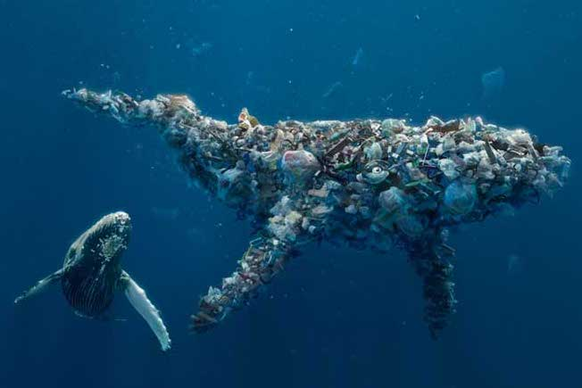
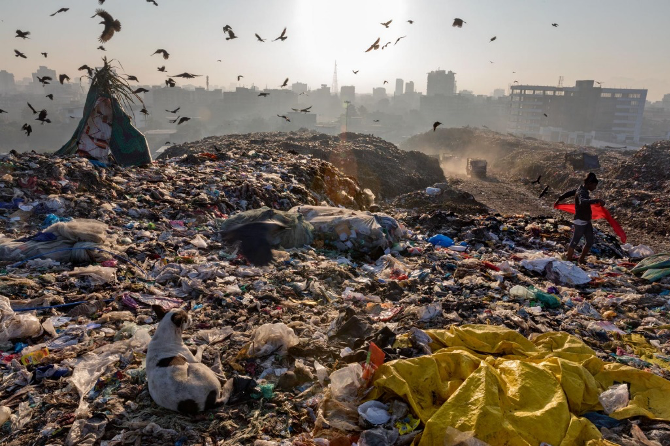

As the world grapples with the unprecedented implications of the COVID-19 pandemic, it is the time for all of us to come together and make a change. We must focus on the workers and volunteers who have the world on their shoulders and could use a little help. With the power of Smurfit Kappa’s corrugated products, we can provide these heroes with supplies they need to reduce the spread of the COVID-19 Virus. Grocery store's cardboard boxes can be weak and can have pests or unwanted bugs and germs. The volunteers and companies delivering to the elderly in isolation need something they can count on, they need something that is not just a box, but a support system, and we have got you covered.
Grocery store's cardboard boxes can be weak and they can have pests or unwanted bugs. With the power of Smurfit Kappa's corrugated products we can provide them with the supplies they need to reduce the spread of Covid-19.
 Helping the enviornment:
Every year the world dumps a massive 2.12 billion tons of waste. A lot of that waste includes the packaging for millions of products. We have come so far in the fight against plastic waste, and a pandemic should not be the reason we throw all our progress away. Non-recycled plastic waste ends up in landfills, out oceans and water ways, and the environment with biodegrading. Slowly overtime plastics break down into microplastics, which can affect the balance of ecosystems and wildlife. We have and can continue to change our fate by slowly deterring from single use plastic waste. We want to continue to focus on a much more environmentally friendly option. With the power of Smurfit Kappa, we would like to substitute out the plastic bags used by all stores and replace them with 100% renewable corrugated products. We want to improve the environmentally footprint of all customers, while also providing a stronger substitute then single use plastic.